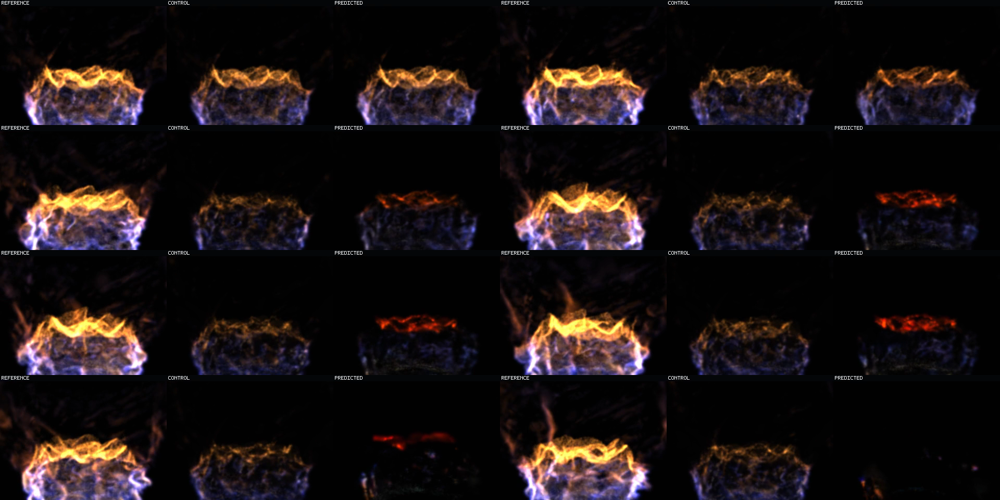
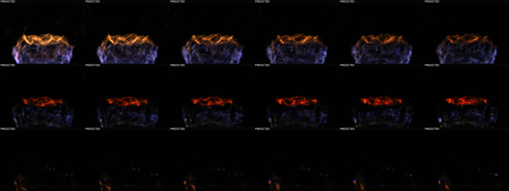
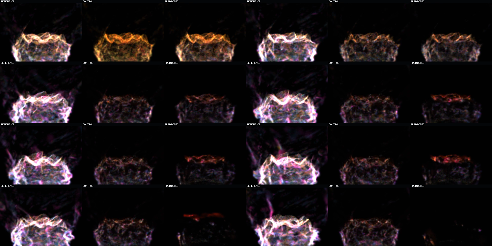

Question: Can learned state evolution beat carried donor appearance, and does it survive direct recurrent coupling to the occupancy head?
One-step result: yes. All Q3/Q4/transport/birth cohorts beat carried-donor MSE on a distinct 63-transition episode; aggregate ratio is 0.5796x.
Recurrent result: no. Updated candidate state poisons subsequent occupancy inputs; support advantage ends after step 17 and visible energy collapses.
Every video frame: left = exact held-out reference, middle = copied-current control, right = combined recurrent prediction.
Watch the first second for coherent but steadily dimming motion. Near 2.9 seconds, the prediction contracts into a repetitive red crown. During the final second, nearly all predicted flame energy disappears even though support count is inflated.
The same states and cadence receive a display-only debug mix: green Q1/Q2, yellow Q3, red Q4, blue transported, magenta birth, orange unmatched/death. Existing colored support proves the late dark beauty frame is not a blank renderer or missing payload.
Row-major times are 0.16, 0.48, 1.60, 2.72, 2.88, 3.20, 6.40, 10.08 seconds. Each tile preserves the left/middle/right role labels. This is one continuous episode.

The three rows are consecutive prediction-only sequences at 0.16-0.96, 2.56-3.36, and 9.28-10.08 seconds. The first row shows real local motion plus monotonic dimming; the second shows red-crown convergence; the third shows near-extinction.

These are the exact same selected times with the fixed additive cohort mix. Support remains present while state energy and registration fail.

| Cohort | Oracle state / donor MSE | Coupled / control MSE | Coupled energy |
|---|---|---|---|
| Q3 | 0.7250x | 2.2321x | 0.1196 |
| Q4 | 0.3562x | 1.3295x | 0.0956 |
| Transported | 0.7445x | 1.9579x | 0.0600 |
| Birth | 0.7570x | 2.0128x | 0.0537 |
The signal is real and the direct composition is wrong. The next falsifier is dual-track recurrence: occupancy advances on its protected canonical state while appearance residuals advance separately on the same selected support.
Occupancy model e51c23d2…; state model 46d7686d…; combined predictions ac4edaec…; MLX Device(gpu, 0); independent 13-frame training and 64-frame evaluation episodes; no fallback. This isolated splat witness does not establish analytical-raymarch agreement, multi-basin generalization, deployable continuation, or runtime integration.